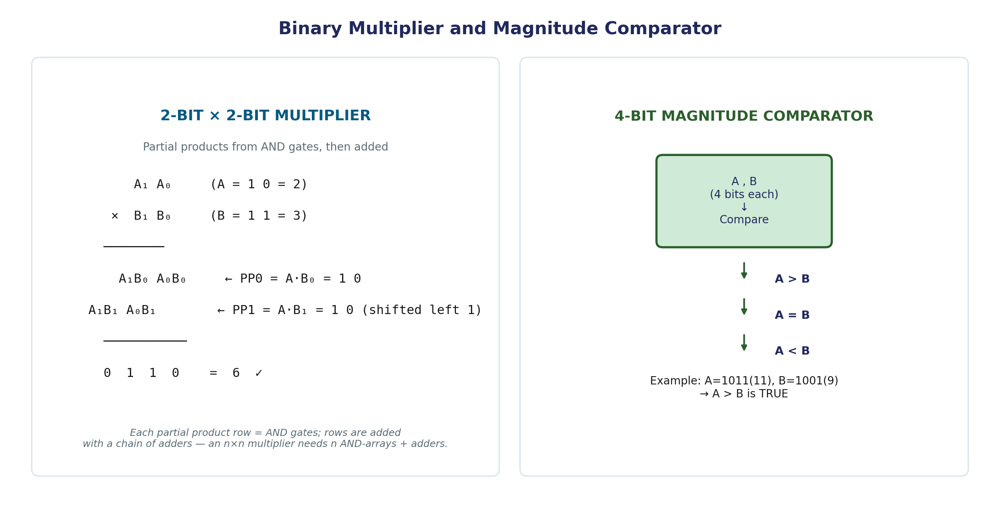

Binary Multiplier & Magnitude Comparator
Two more building blocks that reuse everything from the previous page: a binary multiplier, which turns out to be little more than a grid of AND gates plus a stack of adders, and a magnitude comparator, which decides which of two numbers is bigger — a question that comes up constantly in real hardware, from sorting circuits to CPU branch conditions.
Binary Multiplication — the Manual Process
Binary multiplication follows exactly the same pencil-and-paper process as decimal long multiplication — multiply the multiplicand by each digit of the multiplier, shift each partial product one position left, and add them all together. The only real simplification is that in binary, each digit of the multiplier is either 0 or 1, so each partial product is either all zeros (multiplier bit = 0) or an exact copy of the multiplicand (multiplier bit = 1) — no actual multiplication table to memorize, unlike decimal.
Building the Multiplier from Gates
This "copy or zero" observation is exactly what makes binary multiplication cheap to build in hardware: each partial product bit is simply the AND of a multiplicand bit and a multiplier bit. A combinational binary multiplier is built from:
- A grid of AND gates — one AND gate per (multiplicand bit, multiplier bit) pair — producing every partial product bit.
- A network of adders that sum the (appropriately shifted) partial product rows into the final product.
For an m-bit multiplicand and an n-bit multiplier, the product is up to m+n bits wide, and the AND-gate array alone needs m×n gates — before counting the adders needed to sum the rows.
Worked Example — 2×2 Multiplication
Multiply A = 10₂ (2) by B = 11₂ (3):

A1 A0 (A = 1 0 = 2)
× B1 B0 (B = 1 1 = 3)
---------
A1B0 A0B0 ← PP0 = A·B0 = 1 0
A1B1 A0B1 ← PP1 = A·B1 = 1 0 (shifted left 1 position)
---------
0 1 1 0 = 6 ✓
Check: 2 × 3 = 6. ✓ Each partial product row above is generated by a row of AND gates; adding the two (appropriately shifted) rows is exactly what the adder network does. A 2×2 multiplier needs 4 AND gates and one 2-bit adder; larger multipliers scale up both parts proportionally.
Magnitude Comparator
A magnitude comparator is a combinational circuit that compares two binary numbers, A and B, and reports their relationship through three mutually-exclusive outputs:
A > B, A = B, A < B (exactly one of these is 1 at any time)
The core idea for building one: compare bit by bit, starting from the most significant bit. The first position where A and B's bits differ determines the entire outcome — whichever number has a 1 in that position is the larger one. If every bit matches all the way down to the least significant bit, the numbers are equal.
For two n-bit numbers A = An−1...A₁A₀ and B = Bn−1...B₁B₀, define an equality signal at each bit position:
xᵢ = AᵢBᵢ + Aᵢ′Bᵢ′ (1 exactly when Aᵢ = Bᵢ)
The overall equality output is 1 only when every xᵢ is 1: (A = B) = x₃x₂x₁x₀ (for a 4-bit comparator). The greater-than and less-than outputs are built by checking, from the most significant bit down, for the first position where the bits differ and which operand had the 1 there.
Worked Example — 4-Bit Comparison
Compare A = 1011₂ (11) and B = 1001₂ (9), bit by bit from the MSB:
| Bit position | A | B | Match? |
|---|---|---|---|
| 3 (MSB) | 1 | 1 | Yes — continue |
| 2 | 0 | 0 | Yes — continue |
| 1 | 1 | 0 | No — A has 1, B has 0 |
The comparison stops here: at bit position 1, A and B first differ, and A's bit is the 1. That alone determines the result — A > B — without needing to check bit 0 at all. Check: 11 > 9. ✓
Common Pitfalls
- Each partial product row must be shifted left by its own row index before adding — forgetting the shift silently computes A×B as if every multiplier bit had the same place value, giving a wrong (typically much smaller) result.
- A magnitude comparator's decision is made at the first differing bit from the MSB, not the LSB. Comparing from the wrong end gives a completely different, incorrect answer.
- The three comparator outputs are mutually exclusive — a correctly designed comparator never has two of A>B, A=B, A<B active simultaneously; if a design produces that, there's a logic error somewhere in the equality/inequality chain.
Applications
- Every CPU's ALU includes both multiplication hardware and comparison hardware — comparisons specifically drive conditional branches ("jump if A equals B," "jump if A is greater than B").
- Priority arbitration circuits (deciding which of several competing devices gets access to a shared bus) are built directly on magnitude comparator logic.
- Sorting networks in hardware (used in high-speed routers and specialized sorting chips) are built from chains of comparator circuits, each deciding whether to swap a pair of values.